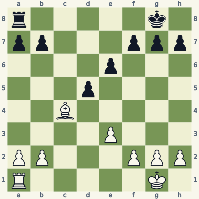
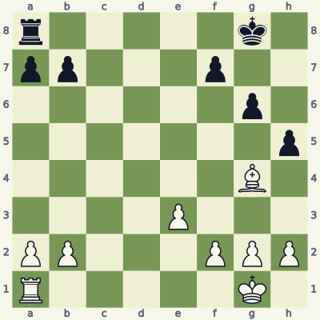
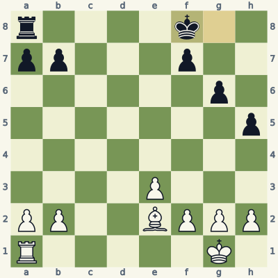
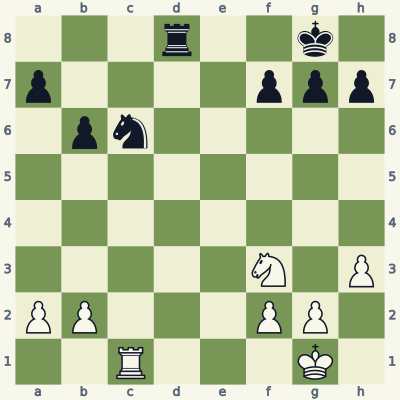
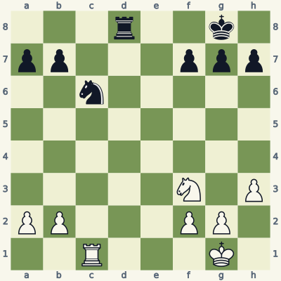
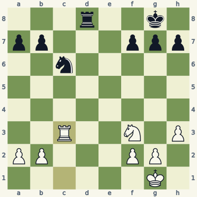
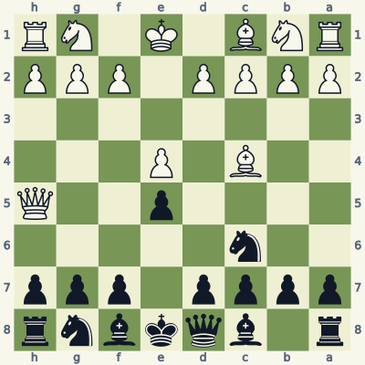
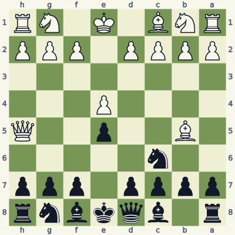
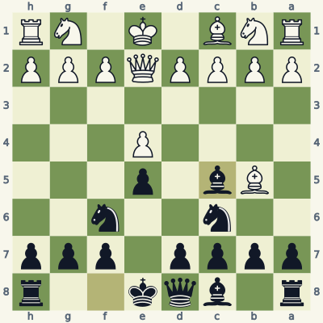

For players who know how the pieces move. Read the model, try the exercise without the answer, then explain the result aloud. Use a board and make the moves one at a time. Spend about 20 minutes per lesson; repeat it tomorrow and a week later.
Check the immediate threat, choose candidates, test the opponent's checks and captures, then inspect the final position. Some questions ask for a safe move or correct diagnosis rather than a unique best move. Sample replies illustrate ideas unless the explanation says they are forced.
Notation and replay help
K king · Q queen · R rook · B bishop · N knight. A pawn move has no piece letter. Nf3 means knight to f3; Rxc6 means rook captures on c6; + means check; # means mate; O-O means kingside castling; e8=Q means promotion. A line beginning 1... starts with Black. Diagrams face the player to move.
The PGN download loads starting positions and sample lines into a chess program. Position codes (FEN) let you recreate individual boards. The PDF and website work without an account.
Lesson 01.1
Save the piece that is attacked
Before improving your position, deal with a piece that can be taken. Saving it requires a safe destination, not just a square that looks active.

Model A · White to movePosition coder5k1/pp3ppp/4p3/3p4/2B5/4P3/PP3PPP/R5K1 w - - 0 1
Read the position
Black's pawn on d5 attacks the bishop on c4: black pawns capture toward lower rank numbers.
The pawn on e6 defends d5. The pawn does not defend the square directly in front of it.
The bishop can retreat along c4-d3. On d3 it is outside both pawns' attacks.
1. Bd3 Kf8
Start with the opponent's immediate capture: ...dxc4 would remove a bishop for no compensation. White should answer that threat now. Bd3 moves the bishop to a safe square and keeps it in the game.
After the quiet illustrative reply ...Kf8, the bishop is still safe. That reply is not forced; the point is to check the destination against all enemy attacks before choosing it. Retreating can preserve more useful activity than a material-losing advance.
Exercise B · White to move
Take five minutes. Write your reason and the opponent's reply before opening the answer.

Inspect what changed from the model.Position coder5k1/pp3p2/6p1/7p/6B1/4P3/PP3PPP/R5K1 w - - 0 1
Which black pawn attacks the bishop on g4?
Does Bxh5 solve the problem? Write Black's reply and the material exchanged.
Name a safe bishop retreat and explain why it is safe.
Read the full explanation
The h5-pawn attacks g4. A pawn does not attack the square directly ahead of it; trace its two diagonal capture squares.
Bxh5 is met by ...gxh5. The g6-pawn protects h5, so White exchanges a bishop for a pawn and has not saved the piece.
Be2 is a safe example. The path g4-f3-e2 is clear, and no black piece attacks e2. Bd1 or Bh3 can also be considered if you verify their paths and destinations; this is not a one-move puzzle.
1. Be2 Kf8

Position after the sample line; the last move is highlighted.
Score your explanation: 1 point for the fact and 1 for its consequence in each answer, out of 6. At 4 or below, replay the model and revisit tomorrow.
Where the idea can fail
Bxd5 takes a pawn, but ...exd5 takes the bishop. The whole exchange gives up a bishop for one pawn. Count the resulting material, not the first capture alone.
Use it in your own games
In your next three games, say which enemy pawn attacks each bishop before you move it. After a game, revisit one retreat and explain what material it preserved.
An undefended piece can be a real opportunity. The useful habit is not "never take"; it is "take only after checking defenders and forcing replies."

Model A · White to movePosition code3r2k1/p4ppp/1pn5/8/8/5N1P/PP3PP1/2R3K1 w - - 0 1
Read the position
White's rook has a clear path from c1 to c6.
A black pawn on b6 attacks a5 and c5. It does not protect c6.
Black can check on d1 after the capture, but White has already made an escape square on h2.
1. Rxc6 Rd1+ 2. Kh2
Rxc6 wins a knight. Before playing it, look for Black's strongest forcing idea: ...Rd1+. The white king can step to h2 because the h-pawn stands on h3 and h2 is not attacked.
The sample line stops after the check is answered. White keeps the extra knight; there is still a game to play. A capture can be sound even when the opponent replies with check, provided you can answer the check without returning the gain.
Exercise B · White to move
Take five minutes. Write your reason and the opponent's reply before opening the answer.

Inspect what changed from the model.Position code3r2k1/pp3ppp/2n5/8/8/5N1P/PP3PP1/2R3K1 w - - 0 1
What changed from Model A?
Calculate Rxc6 through Black's recapture. Who gets the more valuable piece?
Give a safe rook move if you decline the capture.
Read the full explanation
The black b-pawn is on b7, not b6. From b7 it attacks c6, so the knight now has a pawn defender.
Rxc6 bxc6 trades a rook for a knight. Using rough values of rook 5 and knight 3, White gives up about two points of material. These values are guides, but there is no compensating attack in this exercise.
Rc3 is one safe example: the rook stays on the c-file and avoids the defended knight. Rc2 and a king move can also be reasonable. The required answer is the defender and the consequence, not a unique quiet move.
1. Rc3

Position after the sample line; the last move is highlighted.
Score your explanation: 1 point for the fact and 1 for its consequence in each answer, out of 6. At 4 or below, replay the model and revisit tomorrow.
Where the idea can fail
Defenders are about squares, not proximity. A pawn one square away may defend nothing relevant. Conversely, moving a pawn back one rank can turn an apparently free knight into a poisoned capture.
Use it in your own games
Pick any capture from a recent game. On a board, draw the defenders of the target square, then test every available check after your capture.
Development is valuable only if it meets the position's immediate demands. An early queen attack is best answered by identifying the mating square and the piece supporting it.

Model A · Black to movePosition coder1bqkbnr/pppp1ppp/2n5/4p2Q/2B1P3/8/PPPP1PPP/RNB1K1NR b KQkq - 3 3
Read the position
The queen on h5 and bishop on c4 both attack f7.
The king on e8 cannot capture a queen on f7 while the c4-bishop protects that square.
...g6 attacks the queen and blocks its diagonal h5-g6-f7.
3... g6 4. Qf3 Nf6
Black begins with ...g6, interrupting the queen's route to f7 while gaining time against the queen. After Qf3, the queen threatens f7 down the f-file instead.
Now ...Nf6 develops a piece and blocks that new line. The same developing move that failed on the first turn works on the second because the attack's geometry has changed. Always reassess after the queen moves.
Exercise B · Black to move
Take five minutes. Write your reason and the opponent's reply before opening the answer.

Inspect what changed from the model.Position coder1bqkbnr/pppp1ppp/2n5/1B2p2Q/4P3/8/PPPP1PPP/RNB1K1NR b KQkq - 3 3
Which piece has moved compared with Model A, and what important square does it no longer protect?
Can Black now play ...Nf6? Test Qxf7+ rather than guessing.
After White withdraws the queen to e2, suggest a developing continuation.
Read the full explanation
White's bishop is on b5 instead of c4. It no longer protects f7. The queen's attack looks similar, but the mating support is absent.
Yes. After ...Nf6 Qxf7+ Black can play ...Kxf7. The king is not moving into any white attack on f7. White loses a queen for a pawn; the check is not mate.
...Bc5 develops the f8-bishop and eyes f2. Other sensible developing moves exist. The lesson is to inspect the actual support for a threat before importing a familiar response.
3... Nf6 4. Qe2 Bc5

Position after the sample line; the last move is highlighted.
Score your explanation: 1 point for the fact and 1 for its consequence in each answer, out of 6. At 4 or below, replay the model and revisit tomorrow.
Where the idea can fail
Playing ...Nf6 immediately attacks the queen but allows Qxf7#. An attack on the queen does not force it to retreat when it has checkmate available.
Use it in your own games
When facing an early queen move, write the threatened capture and name its supporting piece. If you cannot name a concrete threat, continue developing after a safety check.
All six starts and listed moves in this book were checked for legality. Stockfish 19 reviewed candidates at depth 18. Available endings with seven or fewer pieces were checked against the Lichess tablebase, including every move of the demonstrated endgame lines. A strategic sample is not a claim of unique best play.
These original, AI-assisted explanations were written around the positions and revised after checking. The lesson data and validation notes make the examples inspectable. Further reading and practice: